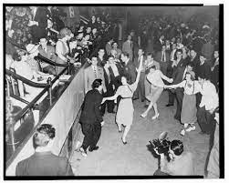

Welcome to the Speakeasy!
Want to learn about the history of jazz? How about the genres and intruments that make up
these amazing sounds? Well you've come to the right place! Explore this website to explore
the history of jazz and how jazz works.
Walk through history as you watch jazz first hit the scene, its booming popularity, and how it is in the modern day.
Check out these pages:
- The History of Jazz!
- Early Years
- Jazz Era
- Modern Times
- Genres of Jazz!
Wait... What is Jazz?
Jazz is a genre of music known for its funky beats, complex harmonies, syncopated rhythms,
and —most importantly—an emphasis on improvisation.
Originating in New Orleans as a result
of the slave trade, it took over the world for 35 years and now is known as one of the most
popular genres that shaped the 1900s.
If you want to know more, try exploring the website!(wink wink nudge nudge)
